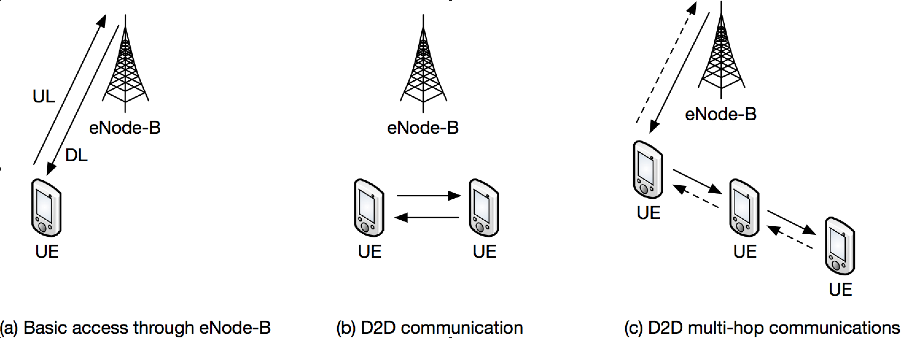

D2D Evolution Towards 5G
"D2D Communication for LTE Advanced Cellular Network" is a project funded by the Indo-French Centre for the Promotion of Advanced Research (CEFIPRA)
The partners of the project are:
- Alcatel-Lucent Bell Labs France,
- Inria,
- Telecom ParisTech (a school of the Institut Mines-Telecom),
- Indian Institute of Technology Kanpur,
- Indian Institute of Science, Bangalore,
- Tata Institute of Fundamental Research
Objectives
The 4th Generation system LTE (Long Term Evolution) was originally designed for providing cellular broadband wireless access to mobile users in regulated frequency bands. An LTE network consists of several base stations (eNodeBs) connected to a packet mode IP core network. User Equipments (UEs) access the eNodeBs through the OFDMA/SC-FDMA air interface for speech, video and data services.
Massive growth in the number of connected devices , traffic volume and the tremendous increase of applications with varying requirements are the major challenges for the next step evolution of LTE to enable a truly networked society where the data could be accessed anywhere at any time. Besides, the number of human centric communication will be surpassed tenfold by communication machines in the future, involving an explosive growth in demand for data bandwidth. Wireless communication systems must be able to handle efficiently such important number of connected devices, and innovative approaches are required to scale up network capacity.

In order to address these challenges properly, enhancements targeting new use cases are considered for the next LTE evolution step as it is currently discussed within the Release 12 of 3GPP LTE Advanced standard. These use cases include, machine type communication (M2M) and national security and public safety services (NSPS). The Device to Device paradigm considered by both academia , industry and 3GPP standards to handle the next LTE evolution use cases, and lead as well future novel wireless applications for proximity services ,content sharing ,distributive storage, multiparty gaming, monitoring and control of cyber physical systems Single-hop and multi-hop D2D communication, for UEs that are not close to each other, are illustrated in the above figure. D2D changes the cellular architecture by allowing two devices to communicate directly when in proximity of each other. It also has the added advantage of being supported by control and coordination functions implemented by eNodeBs and the core network.
The main expected technical advantages of D2D are the enhanced spatial reuse of radio resource, latency reduction, lower power consumption, and traffic offload from congested eNodeBs. Our project aims to objectively assess the advantages of D2D and tackle several technical challenges that need to be overcome in order to make it feasible for a global standard. The broad questions that our proposal seeks answers to are: What are the fundamental limits for D2D communications? What is the system-level performance of a D2D LTE-Advanced network? How to allocate radio resources originally used and controlled by the eNode-B to D2D? How to optimally select the transmission mode? How to enable relaying and find a path to the eNode-B?
Our multi-layer technical approach and specific objectives are:
- Design and performance evaluation of opportunistic spectrum allocation and sharing mechanisms for D2D in LTE-Advanced networks.
- Derive the fundamental achievable rates of D2D communications when the eNodeB is D2D-aware.
- Design of signal processing algorithms to facilitate D2D communications and spectrum sensing for intra-cell resource scheduling.
- Develop algorithms for peer and link discovery protocols for D2D communication in LTE-Advanced, and evaluation of the signalling overhead vs. throughput trade-off.
- Propose new versions of Mobile Ad-hoc Networks (MANET) protocols such as Optimized Link Sate Routing Protocol (OLSR) for D2D multi-hop communications.
- Devise Relaying, Cooperation and self organization strategies for heterogeneous networks.